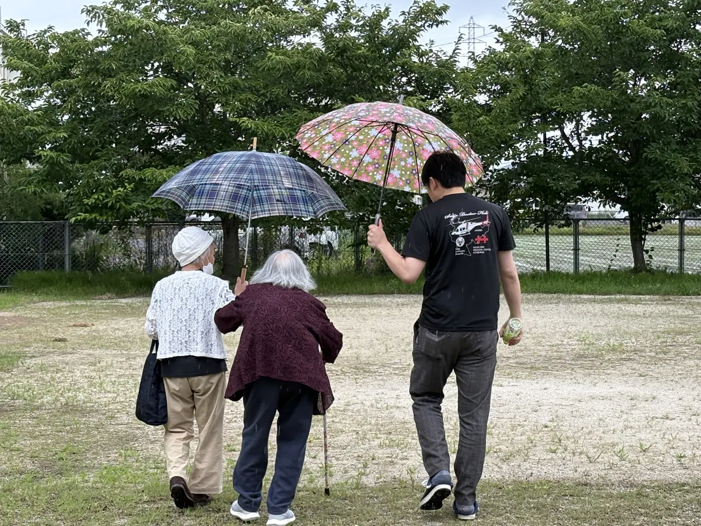
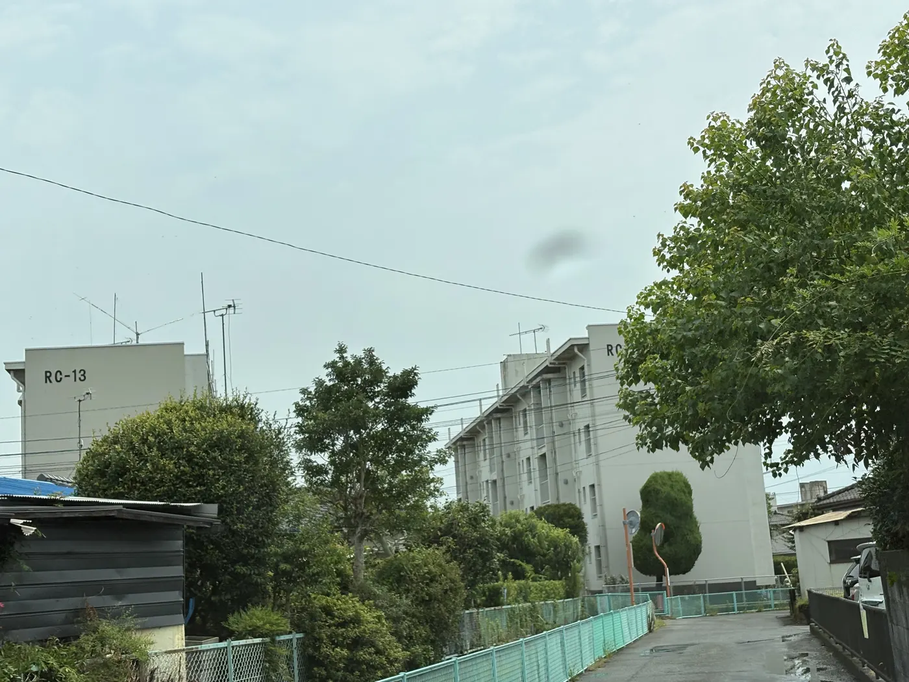

OSHIBOTAN PROJECT
佐賀大学医学部附属病院 救急医学講座 × 地域コミュニティ ／ 研究員・実施担当
毎朝ボタンを押すだけで安否を知らせる、住民主導の見守りシステム。佐賀市内の県営住宅で2016年から運用が続き、2023年からは研究チームとして毎月の高齢者サロンに参加。住民との対話、記録カレンダーの回収・データ整理、インタビュー調査を担当しています。




GRANT「地域に根差した高齢者単独世帯の孤独死・突然死回避のシステム構築」に取り組みました。
DATA
ボタン1つで、本人・地域・大学がつながる仕組み
1年間の運用・インタビュー調査より(参加者に占める割合)
| 項目 | 割合 |
|---|---|
| ボタン押下率95%以上 | 100% |
| 生活リズム・役割意識の形成 | 64.3% |
各項目が向上した参加者の割合
| 項目 | 向上した割合 |
|---|---|
| 地域への信頼感 | 56.3% |
| 社会的結束感 | 56.3% |
| 社会参加 | 18.8% |
| 互恵性 | 6.3% |
EQ-5D-5L 平均スコア 0.898(SD 0.060)。地域在住高齢者として良好な水準
2016年の運用開始から、研究・共同開発・行政への提案へ